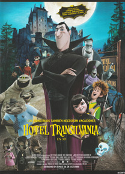

Hotel Transilvania
En el hotel se alojarán monstruos tan famosos como Frankenstein, El Hombre Lobo, El Hombre Invisibre, el Yeti o la Momia
Todos ellos y muchos más se reunirán para la celebración del 118 cumpleaños de Mavis, que cree que ha llegado el momento de que su padre le permita conocer mundo, soñando con ir al Paraíso, donde sus padres se conocieron - realmente la isla de Hawaii.
Sabiendo que tarde o temprano ese momento llegaría, Drácula le da a su hija un plazo de 30 minutos para que vaya hasta el pueblo más cercano al hotel y regrese.
La chica sale feliz hacia el pueblo sin saber que su padre va tras ella vigilándola, no encontrando a nadie al llegar al pueblo ya que es de noche, hasta que de pronto sale un grupo de humanos dispuestos a acabar con ella armados con tridentes, antorchas y pan con ajo, si bien son ellos los que acaban ardiendo por error.
Mavis ignora que el pueblo que visitó era un montaje preparado por su padre para conseguir que se asustara y no deseara volver a ver a los humanos, y que los supuestos humanos en realidad eran zombis disfrazados.
Para Drácula lo importante es que consiguió su objetivo y Mavis no desea salir, por lo que está contento, hasta que de pronto ve aparecer en el hotel a un muchacho que dice llamarse Jonathan, de 21 años.
Este le cuenta que le hablaron de un bosque espeluznante y decidió ir a conocerlo, viendo así a los zombis ardiendo a los que siguió hasta el hotel.
El muchacho cree que ha llegado a una fiesta de disfraces, mientras Drácula teme que quiera hacerles daño, por lo que decide echarlo del hotel, disfrazándolo como si de un monstruo más se tratara para no llamar la atención de los demás clientes del hotel siendo la rata de Quasimodo, el cocinero, la única que olfatea la presencia humana.
Jonathan por su parte está feliz con la fiesta hasta que se da cuenta de que no es una fiesta de disfraces cuando ve un esqueleto y comprende que es real y no un disfraz, apoderándose de él el pánico ante tanto monstruo real, por lo que sale corriendo hasta acabar chocando con Mavis, que se siente muy interesada por él, al ser el único habitante del hotel "de su edad", que vuelve a huir al enterarse de que el padre de la muchacha es el auténtico conde Drácula, que debe aclararle que no desea tomar su sangre ni la de ningún humano, llena de microbios y grasas, por lo que toma una sangre baja en colesterol.
Cuando va a expulsarlo aparece de nuevo Mavis, y lo hace pasar por un organizador que le ayuda a preparar la fiesta de cumpleaños de su hija, haciéndolo pasar por un primo de Frankenstein, "Johnnystein".
Trata de expulsarlo del castillo por una salida de emergencia, pero es un laberinto y es incapaz de encontrarla, acabando donde los monstruos tratan de conseguir que los zombies de Mozart, Bach y Beethoven compongan algo para el cumpleaños.
Él se encarga de que la música sea un poco mas movida. Tocando un rock y haciendo que todos bailen, siendo los demás actos, como el bingo o el juego de adivinar películas que siempre hacen, mucho más flojo.
Mientras cenan la rata vuelve a olerlo y está a punto de descubrirlo.
Luego se organiza una divertida pelea de caballitos en la piscina, no dándose cuenta de que con el agua se le quitará el maquillaje, por lo que Drácula hace que se vacíe la piscina.
Tras ello trata de expulsarlo de nuevo tratando de hipnotizarlo para hacer que olvide tanto el hotel como a los monstruos, aunque no funciona por culpa de las lentillas, amenazando con chuparle la sangre si regresa.
Pero mientras se va aparece Mavis, que le lleva hasta lo alto del castillo, fascinada por el hecho de que haya visitado tantos países.
Jonathan piensa lo bello que debe ser el amanecer desde allí arriba y le muestra a la muchacha algo que nunca había visto, el amanecer, procurando que no le dé el sol.
Y cuando lo creía ya lejos, cede el techo cayendo Jonathan sobre Drácula en la sauna.
Le castiga a recolocar las mesas del comedor, aunque cuando el muchacho descubre que estas son capaces de volar se entabla entre ellos una persecución a bordo de las mesas, descubriendo Drácula lo divertido que es hasta que chocan.
Pero entonces Jonathan desaparece tras ser finalmente descubierto por Quasimodo que trata de llevarlo hasta la cocina, tratando de evitarlo las armaduras por orden de Drácula, antes de que el cocinero lo convierta en picadillo.
Y después de tantos años Mavis habla por vez primera de amor
Tras rescatarlo del fuego, Drácula le muestra un cuadro de una dama que el muchacho identifica, pues vio otro cuadro en el castillo de Lubov, conociendo su leyenda, que dice ella, Lady Lubov se enamoró de un conde y estuvieron muy enamorados, viviendo en el castillo de Lubov, donde tuvieron una hija, siendo felices hasta que el castillo ardió misteriosamente y murieron los dos.
Drácula le explica que la leyenda se equivoca, pues el conde era él y solo murió ella, siendo los humanos quienes acabaron con ella.
Construyó el hotel para proteger a su hija, pero ahora ella siente algo por él.
Jonathan le dice que las cosas han cambiado y que deben modernizarse, aunque debe reconocer que si salieran a la civilización seguirían sin ser aceptados, por lo que decide marcharse, convenciéndolo Drácula para que se quede a la fiesta.
Todos se preparan para la fiesta, que esperan sea un éxito, haciendo con luces los monumentos más famosos del mundo para que los pueda conocer, lo que definitivamente la enamora, por lo que ella acaba besando al muchacho.
Y cuando su padre los regaña, ella comenta que desea volver a salir a conocer mundo.
Debido a la discusión, Drácula acaba reconociendo que el pueblo no existe y que fue un montaje preparado por él para que se asustara y no quisiera salir, pudiendo así estar protegida.
Irrumpe entonces en la fiesta Quasimodo que revela que Jonathan es un humano, provocando el pánico generalizado entre los monstruos.
Pero entonces ella dice que le da lo mismo y que a pesar de que es un humano desea estar con él, ante lo que el muchacho dice que él no quiere estar con ella, pues odia a los monstruos, por lo que se marcha, quedando la fiesta suspendida.
Poco después Drácula encuentra a su hija sobre el tejado, pidiéndole a su padre que le borre la mente, pues ha descubierto que los humanos odian a los monstruos.
Tiene con ella el libro que le dejó su madre y que su padre le entregó al cumplir los 118 años en el que le rebelaba que ella encontrará a su amor como lo encontró ella.
Drácula les pide a los monstruos que le ayuden a encontrar a Jonathan, pues cree que el muchacho a pesar de ser un humano es una buena persona.
Los monstruos deciden ayudarlo a encontrar al joven, llegando tras su pista hasta Transilvania donde se celebra un festival de monstruos, logrando gracias a ello pasar desapercibidos, aunque hay tanta gente que les impedirán llegar a tiempo hasta el aeropuerto, por lo que deben demostrarles que son los verdaderos monstruos, aunque en vez de asustarse consiguen que los humanos les aplaudan.
Les explican la necesidad que tienen de llegar al aeropuerto y la gente decide ayudarles abriéndoles camino y tapando la luz del sol para evitar que Drácula muera.
Llegan a pesar de todo tarde al aeropuerto, habiendo ya despegado el avión con Jonathan a bordo, debiendo Drácula volar hacia el mismo, estando a punto de morir quemado por el sol.
Gracias a sus poderes hipnotiza a uno de los pilotos, al que le hace decir en voz alta lo que él le transmite, pidiéndole así perdón a Jonathan, pues su hija lo ama y cree que están hechos el uno para el otro, haciendo tras ello que el piloto dé media vuelta y regrese a Transilvania.
Regresan tras ello al hotel, donde le dice a su hija que quiere que viva su vida, tras lo cual le muestra que trae con él a Jonathan, que le asegura que dijo que no la quería por miedo a que su padre le chupara la sangre si decía lo contrario, por lo que tras reconocer que la ama se besan, celebrándose tras ello una fiesta en la que todos cantan felices.